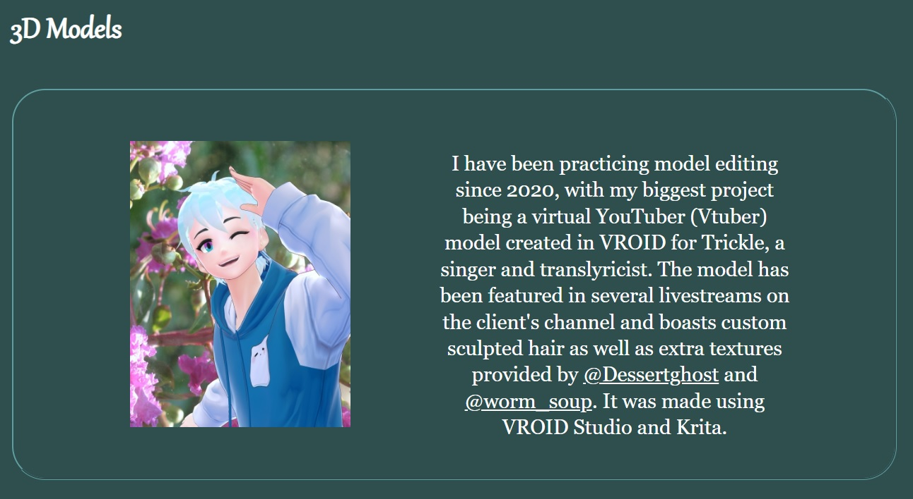
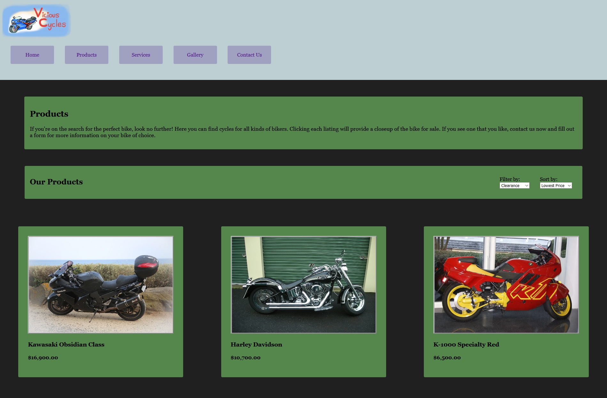
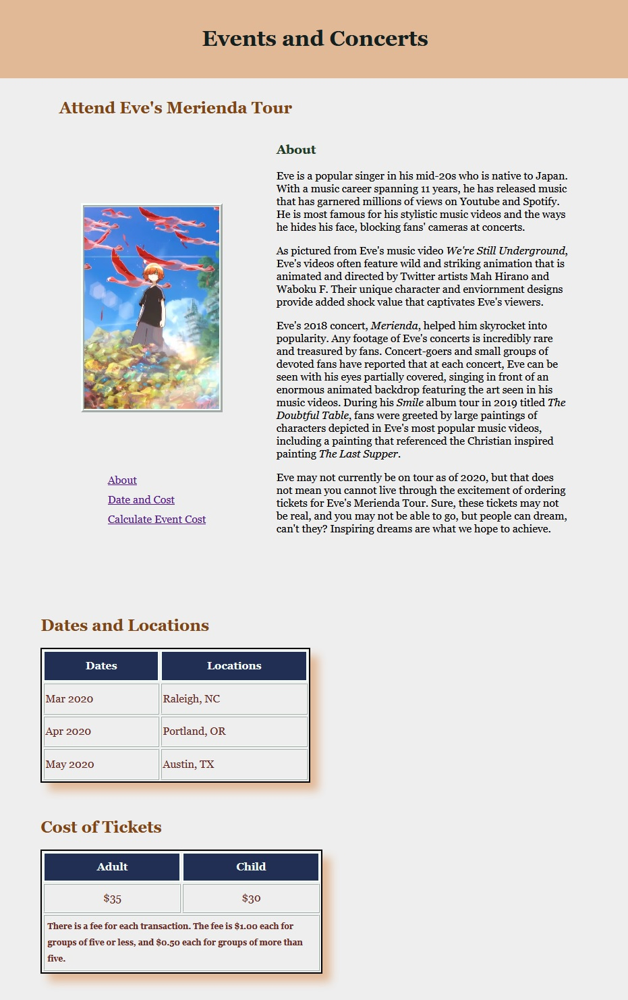

Melissa Figueroa
Seeing the world uniquely through art and design~
HTML & CSS Experience

I am a 19 year old artist currently learning how to create websites that prioritize accessibility and aesthetic appeal. My projects range widely in variety from traditional art to planned out stylesheets.
I have created and fixed up multiple webpages as I study web development and design at Wake Technical Community College.
Experience
I have acquired the experience to do the following:
- Create basic HTML homepages with multiple complimentary pages.
- Use external, internal, and inlne CSS styles to add colors, responsiveness, and accessibility text to my webpages.
- Use basic Javascript to run small scripts that will notify users through alerts and switch to internal stylesheets at the click of a button.
- Use Flexbox to organize image galleries and embedded media.
My Latest Projects
Listed below are some of the projects I have worked on to build my portfolio. To explore more examples of designs I have worked on, please visit Missy Sweet Citrus- Web Designs.
Mini Portfolio- 2021
One of my latest projects, created as a refresher to evaluate my experience. I got to work with some of my favorite colors when designing the layout. This portfolio focused more on my personal hobbies and general artistic experience. There are currently two existing versions of the portfolio.
Vicious Cycles Mockup- 2021
My biggest project to date, completed in April 2021. It was created as a demonstration of my best abilities at the time. Includes a homepage, gallery, and contact form.
Eve's Merienda Tour Mockup- 2020
One of my first ever webpages, where I first learned how to create tables and use CSS. The page was created as a place where you could hypothetically order tickets for the 2018 Merienda concert, which was a Japan exclusive tour series featuring Eve. He is a popular J-Rock artist known for moody, fast paced songs and beautifully animated music videos, making him one of my favorite artists at that time. I am proudest of the colorful tables and side navigation menu below the main image.
Education
Wake Technical Community College - Raleigh
I am currently a sophmore student majoring in IT and Web Development. Most of the classes I take apply well to my major. As a part time student, I plan to graduate in either 2023 or 2024.
Credits
Credit links will open in a new tab.
Thumbnail photo taken by Oli Dale on Unsplash.
Header font provided by Max Kohler and Google Fonts.